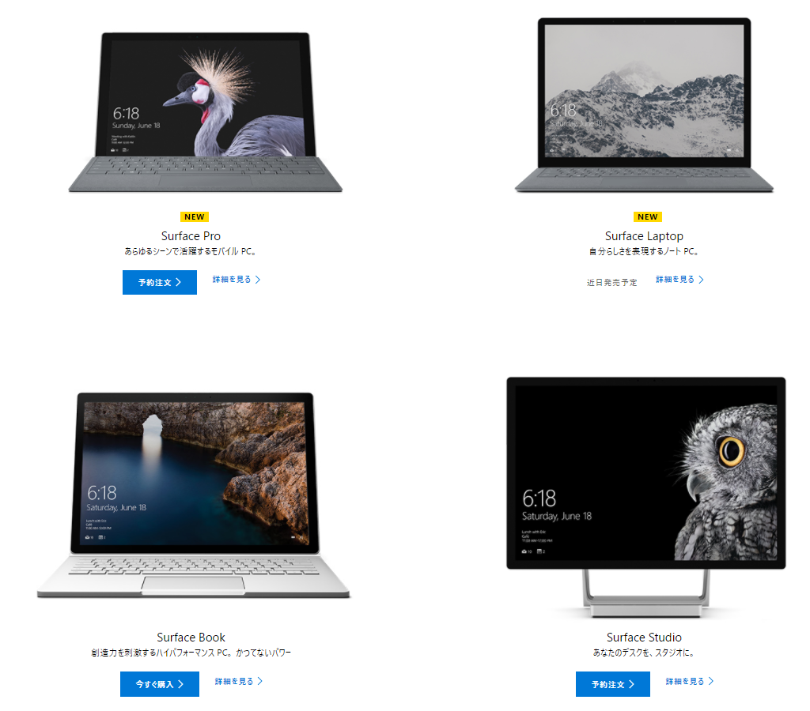
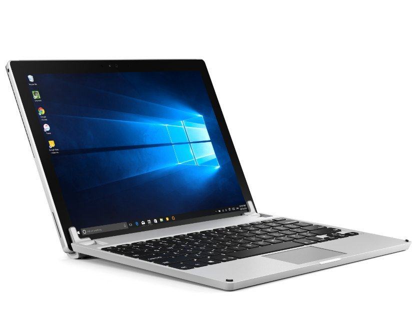
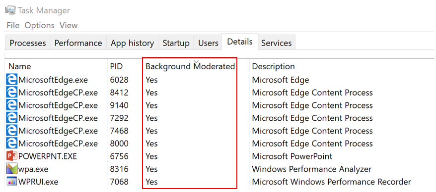
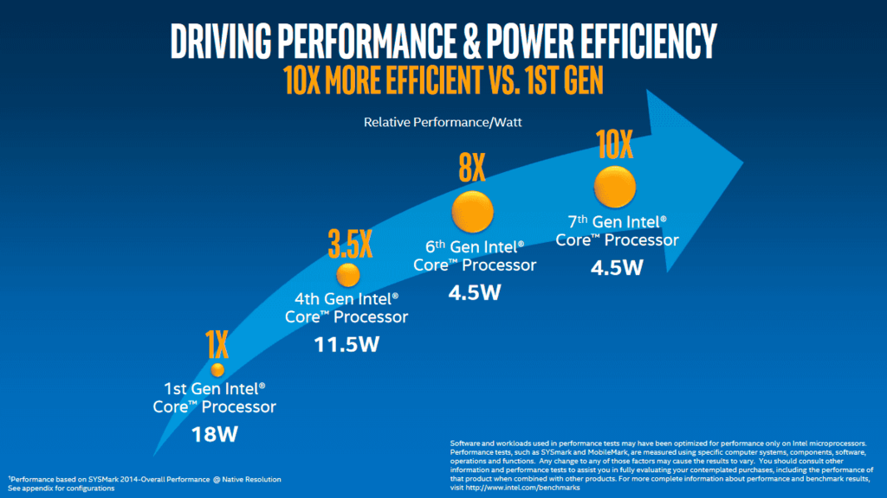

新しい Surface が日本にもくるわけだけど……
公開日：

めっちゃほしい（迫真
Surface Studio は残念ながら完全に予算オーバーで買えない気がするのだけど、新しい Surface Pro は LTE 版（今秋でるらしい）を買う気満々で全裸待機中でござる。
というわけで、今持ってる Surface 3/Surface Pro 3 と現行版の Surface Pro 4、そしてこれからでる Surface Pro の違いを、個人的に気になる点を中心にまとめてみた。
外寸・重量
| Surface Pro 3 | Surface Pro 4 | Surface Pro（2017） | |
| 横 | 292 mm | 約292.1 mm | 約 292 mm |
| 縦 | 201.3 mm | 201.4 mm | 201 mm |
| 厚み | 9.1 mm | 8.4 mm | 8.5 mm |
| 重量 | 800 g | 786 g（i5/i7） | 770 g（i5） |
外寸と重量はほぼ変わらない……ってことは、“BRYDGE 12.3”がそのまま使える可能性が高いな。“BRYDGE 12.3”ってのは Surface 向けのサードパーティー製キーボードで、付けると Macbook っぽくなる。接続は Bluetooth で行う仕組みで、ストレージ内蔵モデルとストレージのないモデルがラインナップされている。

TypeCover は出たばかりの頃は感動してたけど、最近はもっとカッチリしたキーボードの方が好み（あと、英語配列を日本でも売ってほしい……）なので、“BRYDGE 12.3”を試してみたい――んなわけで、外寸の違いは割と重要な要素だったのだけど、ほぼ変わりがないっぽくて安心。
※まだ発注するとは言っていない
新しい Surface Pro はお値段が若干高めだけど、TypeCover が使いまわせれば多少出費を抑えることができるかな？ ペンも使いまわせるだろうけど、これは新しくした方がよさげ。
――Surface Penも筆圧レベルを従来の1,024段階から4,096段階に増やした新モデルを投入。新たに傾き検知をサポートするほか、21msの低遅延により、実際の紙に近い書き心地を実現。ペンの本体色も新たにタイプカバーに合わせて4種類の展開となった。
なお、ペンは別売りで、8月に発売予定。税別参考価格は11,800円。従来のSurfaceシリーズでも利用可能だが、傾き検知には非対応となり、筆圧もSurface Pro 3までは256段階、Pro 4/Laptop/Studio/Bookでは1,024段階までの対応となる。
スタンドが最大165度まで開くようになった新しい「Surface Pro」 ～軽量化と静音化、高機能化を実現。実機写真を多数掲載 - PC Watch
Surface ペン、高ぇ……！
CPU
Surface 3 と Surface Pro 3 の両方を持っている自分だけど、スペックは Surface Pro 3 の方が高いにもかかわらず、利用頻度は Surface 3 の方が高い。なぜなら、Surface Pro 3 は“五月蠅い”。冷却ファンの音が割と大きくて、静かなリビングでゴロゴロしながら使うにはちょっと……熱いのも困る。
新しい Surface Pro はここら辺も改善されていて、i5 モデルまではファンレスらしい。i7 はファン付きだけど、かなり静からしいので、こっちもありかもしれん（家電量販店でっファンの音をチェックするのはだいぶ厳しいが……）。
あと、CPU が新しいのも魅力やね。
| Surface Pro 3 | Surface Pro 4 | Surface Pro（2017） | |
| CPU の世代 | 第4世代（Haswell） | 第6世代（Skylake） | 第7世代（Kaby Lake） |
| CPU のモデル | i3/i5/i7 | m3/i5/i7 | m3/i5/i7 |
| ファンレス | × | m3 | m3/i5 |
| バッテリー駆動時間 | 最大約 9 時間の Web 閲覧 | 動画再生最大約 9 時間 | 最大約 13.5 時間の動画再生 |
静粛性とバッテリー持続時間の改善が著しい。
あと、Windows 10 Insider Preview でテスト中の Power Throttling は Skylake 以降の対応（Intel SpeedShift Technology）なので、Pro 4 以降じゃないとダメなんだよねー。こういう技術も、静粛性とバッテリー持続時間にいい影響を与えてるのかもしれない。

グラフィックス
Surface Pro シリーズにはグラフィックスを期待していないが、あるに越したことはない。ゲームは Civilization しかやらんけど、ゲーム録画しながらサクサク遊べるようになったら、プレイ配信なんかにもチャレンジしてみたいなー（ちょっときついかなぁ？
| Surface Pro 3 | Surface Pro 4 | Surface Pro（2017） | |
| i3/m3 | HD Graphics 4200 | HD Graphics 515 | HD Graphics 615 |
| i5 | HD Graphics 4400 | HD Graphics 520 | HD Graphics 620 |
| i7 | HD Graphics 5000 | Iris Graphics 540 | Iris Graphics 640 |

最近の CPU や GPU はよくわからんけど、まぁ、早くなってんねやろ（投げやり
その他の機能
| Surface Pro 3 | Surface Pro 4 | Surface Pro（2017） | |
| 顔認証 | × | ○ | ○ |
| Surface Dial 対応 | × | ○ | ○ |
| LTE モデル | × | × | ○ |
機能面では Windows Hello の顔認証対応がうれしいかも。パスワードの入力がいらなくなるぜー（ぃぇーぃ
あと、LTE モデルには期待。LTE は Surface 3 で経験済みだけど、あるとないのとでは割と違う。だいたい、初回セットアップでアクセスポイントのパスワードを入れなくていいのが大変よろしい。あとは Microsoft アカウントの確認さえやれば、無線 LAN のパスワードが同期される。ここでもパスワードの入力がいらなくなるぜー（ぃぇーぃ
最近はモバイル回線も大容量プランが出てきたし、いっそのこと WiMAX を解約して、大容量 LTE（＋複数台シェア）に乗り換えちゃうのもありだな。
スタンドの傾きが増えたとか、そういうのは、まぁ、個人的には割とどうでもいいや。あと Office 要らないんだけど（Office 365 買ってる）……その分安くしてくれないかなぁ。